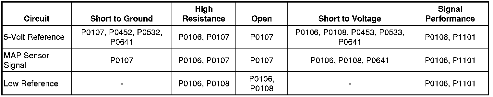
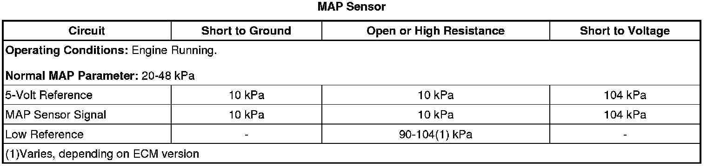
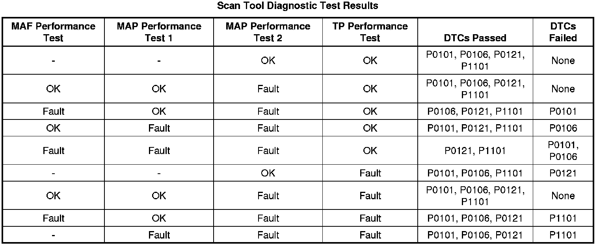

P0106
DTC P0106
Diagnostic Instructions
* Perform the Diagnostic System Check - Vehicle (Initial Inspection and Diagnostic Overview) prior to using this diagnostic procedure.
* Review Strategy Based Diagnosis (Initial Inspection and Diagnostic Overview) for an overview of the diagnostic approach.
* Diagnostic Procedure Instructions (Initial Inspection and Diagnostic Overview) provides an overview of each diagnostic category.
DTC Descriptor
DTC P0106
- Manifold Absolute Pressure (MAP) Sensor Performance
Diagnostic Fault Information

Typical Scan Tool Data

Circuit Description
The intake flow rationality diagnostic provides the within-range rationality check for the mass air flow (MAF), manifold absolute pressure (MAP), and the throttle position (TP) sensors. This is an explicit model-based diagnostic containing 4 separate models for the intake system.
* The throttle model describes the flow through the throttle body and is used to estimate the MAF through the throttle body as a function of barometric pressure (BARO), TP, intake air temperature (IAT), and estimated MAP. The information from this model is displayed on the scan tool as the MAF Performance Test parameter.
* The first intake manifold model describes the intake manifold and is used to estimate MAP as a function of the MAF into the manifold from the throttle body and the MAF out of the manifold caused by engine pumping. The flow into the manifold from the throttle uses the MAF estimate calculated from the above throttle model. The information from this model is displayed on the scan tool as the MAP Performance Test 1 parameter.
* The second intake manifold model is identical to the first intake manifold model except that the MAF sensor measurement is used instead of the throttle model estimate for the throttle air input. The information from this model is displayed on the scan tool as the MAP Performance Test 2 parameter.
* The fourth model is created from the combination and additional calculations of the throttle model and the first intake manifold model. The information from this model is displayed on the scan tool as the TP Performance Test parameter.
The estimates of MAF and MAP obtained from this system of models and calculations are then compared to the actual measured values from the MAF, MAP, and the TP sensors and to each other to determine the appropriate DTC to fail. The following table illustrates the possible failure combinations and the resulting DTC or DTCs.

Conditions for Running the DTC
* DTCs P0102, P0103, P0107, P0108, P0112, P0113, P0116, P0117, P0118, P0128, P0335, P0336, P0401, P0405, P1404 are not set.
* The engine is running.
* The intake air temperature (IAT) is between -7 and +60°C (+19 and +140°F).
* The engine coolant temperature (ECT) is between 70-121°C (158-249°F).
* This DTC runs continuously when the above conditions are met.
Conditions for Setting the DTC
The engine control module (ECM) detects that the MAP sensor pressure is not within range of the calculated pressure that is derived from the system of models for greater than 0.5 second.
Action Taken When the DTC Sets
DTC P0106 is a Type B DTC.
Conditions for Clearing the MIL/DTC
DTC P0106 is a Type B DTC.
Diagnostic Aids
* A wide open throttle (WOT) acceleration from a stop should cause the MAP sensor parameter on the scan tool to increase rapidly to near the BARO parameter at the time of the 1-2 shift.
* A skewed or stuck engine coolant temperature (ECT) or IAT will cause the calculated models to be inaccurate and may cause this DTC to run when it should not. Refer to Temperature Versus Resistance (Temperature Versus Resistance) .
* The BARO that is used by the ECM to calculate the air flow models is initially based on the MAP sensor at ignition ON. When the engine is running, the ECM will continually update the BARO value near wide open throttle (WOT) using the MAP sensor and a calculation. A skewed MAP sensor will cause the BARO value to be inaccurate. Use a scan tool and compare the BARO parameter with the ignition ON to the Altitude vs. Barometric Pressure table. Refer to Altitude Versus Barometric Pressure (Altitude Versus Barometric Pressure) .
Reference Information
Schematic Reference
Engine Controls Schematics (Electrical Diagrams)
Connector End View Reference
Component Connector End Views (Connector Views)
Electrical Information Reference
* Circuit Testing (Component Tests and General Diagnostics)
* Connector Repairs (Component Tests and General Diagnostics)
* Testing for Intermittent Conditions and Poor Connections (Component Tests and General Diagnostics)
* Wiring Repairs (Component Tests and General Diagnostics)
DTC Type Reference
Powertrain Diagnostic Trouble Code (DTC) Type Definitions (Diagnostic Trouble Code Descriptions)
Scan Tool Reference
Control Module References (Programming and Relearning) for scan tool information
Special Tools
* J 23738-A Mityvac
* J 35555 Metal Mityvac
Circuit/System Verification
1. Verify that P0641 or P0651 are not set.
• If any of the DTCs are set, refer to DTC P0641 or P0651 (P0641) .
2. Verify that restrictions do not exist in the exhaust system. Refer to Restricted Exhaust (Restricted Exhaust) .
3. Verify that the engine is in good mechanical condition. Refer to Symptoms - Engine Mechanical (- Symptoms - Engine Mechanical) .
4. Ignition OFF for 90 seconds, determine the current vehicle testing altitude. Ignition ON, observe the scan tool MAP Sensor parameter. Compare the parameter to the Altitude Versus Barometric Pressure (Altitude Versus Barometric Pressure) table. The BARO sensor pressure parameter should be within the specified range indicated in the table.
5. Ignition ON, observe the MAP Sensor kPa parameter with a scan tool. Start the engine. The MAP Sensor kPa parameter should change.
6. Use the scan tool and compare the MAP Sensor parameter to a known good vehicle, under various operating conditions. The readings should be within 3 kPa of the known good vehicle.
7. Ignition ON, compare APP sensors 1 and 2 percentages with a scan tool. Verify that they do not differ more than 5 percent when a slow pedal sweep is performed.
8. Operate the vehicle within the Conditions for Running the DTC. You may also operate the vehicle within the conditions that you observed from the Freeze Frame/Failure Records data.
Circuit/System Testing
1. Verify the integrity of the air induction system by inspecting for the following conditions:
* Damaged components
* Loose or improper installation
* An air flow restriction
* A cracked or restricted MAP sensor vacuum hose
* An intake manifold leak
2. Ignition OFF, disconnect the harness connector at the MAP sensor.
3. Ignition OFF for 90 seconds, test for less than 5 ohms of resistance between the low reference circuit terminal A and ground.
• If greater than the specified range, test the low reference circuit for an open/high resistance. If the circuit tests normal, replace the ECM.
4. Ignition ON, test for 4.8-5.2 volts between the 5-volt reference circuit terminal C and ground.
• If less than the specified range, test the 5-volt reference circuit for a short to ground, or an open/high resistance. If the circuit tests normal, replace the ECM.
• If greater than the specified range, test the 5-volt reference circuit for a short to voltage. If the circuit tests normal, replace the ECM.
5. Verify the scan tool MAP parameter is less than 12 kPa.
• If greater than the specified range, test the signal circuit terminal B for a short to voltage. If the circuit tests normal, replace the ECM.
6. Install a 3A fused jumper wire between the signal circuit terminal B and the 5-volt reference terminal C. Verify the scan tool MAP parameter is greater than 103 kPa.
• If less than the specified range, test the signal circuit for a short to ground, or an open/high resistance. If the circuit tests normal, replace the ECM.
7. If all circuits test normal, test or replace the MAP sensor.
Component Testing
Important: You must perform the Circuit/System Testing before proceeding with Component Testing.
Skewed Signal Test
1. Ignition OFF, remove the vacuum source from the MAP sensor.
2. Ignition ON, observe and record the scan tool MAP sensor pressure parameter. This is the first MAP sensor reading.
3. With the J 23738-A or J 35555 , apply 5 in Hg (17 kPa) of vacuum to the MAP sensor. Observe and record the scan tool MAP sensor pressure parameter. This is the second MAP sensor reading.
4. Subtract the second MAP sensor reading from the first MAP sensor reading. Verify that the vacuum decrease is within 1 in Hg (4 kPa) of the applied vacuum.
• If the vacuum decrease is not within the specified range, replace the MAP sensor.
5. With the J 23738-A or J 35555 , apply 10 in Hg (34 kPa) of vacuum to the MAP sensor. Observe and record the scan tool MAP sensor pressure parameter. This is the third MAP sensor reading.
6. Subtract the third MAP sensor reading from the first MAP sensor reading. Verify that the vacuum decrease is within 1 in Hg (4 kPa) of the applied vacuum.
• If the vacuum decrease is not within the specified range, replace the MAP sensor.
Erratic Signal Test
1. Ignition OFF, remove the MAP sensor.
2. Install a 3A fused jumper wire between the 5-volt reference circuit terminal C of the sensor and the corresponding terminal of the MAP sensor.
3. Install a jumper wire between the low reference circuit terminal A of the sensor and ground.
4. Install a jumper wire at terminal B of the MAP sensor.
5. Connect a DMM between the jumper wire from terminal B of the MAP sensor and ground.
6. Ignition ON, with the J 23738-A or J 35555 , slowly apply vacuum to the sensor while monitoring the voltage on the DMM. The voltage should vary between 4.9-0.2 volts without any spikes or dropouts.
• If the voltage is erratic, replace the MAP sensor.
Repair Instructions
Perform the Diagnostic Repair Verification (Verification Tests) after completing the diagnostic procedure.
* Manifold Absolute Pressure Sensor Replacement (Service and Repair)
* Control Module References (Programming and Relearning) for ECM replacement, setup, and programming